Making of · 9 November 2026
Making Ant Playground
In one day, a single AI-drawn sprite sheet of a walking ant grew into a living colony with scent trails, hunger, a spider, an anteater, and Aunt Hillary: the talking ant colony from Gödel, Escher, Bach, played by an AI. Ken Kahn directed, mostly one short request at a time. Claude, an AI from Anthropic, wrote the code in Claude Code. This page tells the story.
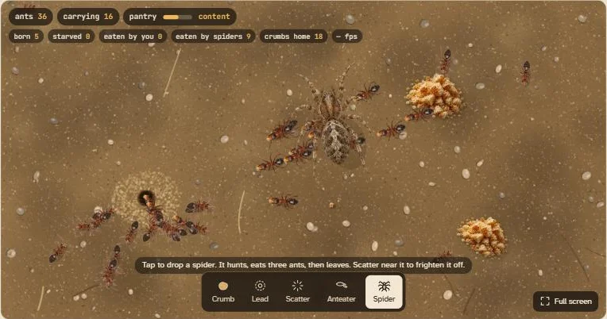
01A sprite sheet that couldn't be trusted
It started with one picture and one question: "make a web app that shows off this ant sprite. And what other sprite sheets might we add to make it more interesting?" The picture was an AI-generated sheet: 16 rows of directions, 8 walking frames each, on a gray background.
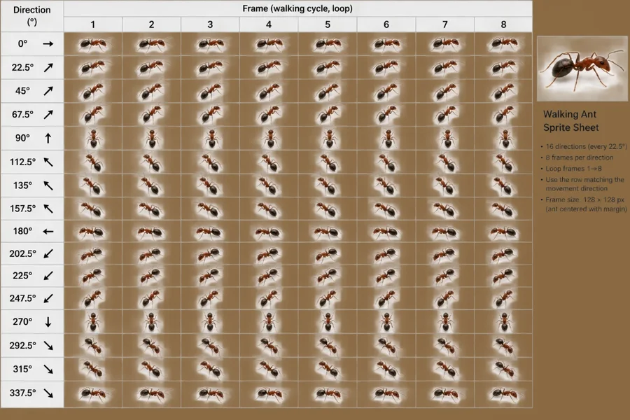
Cutting it up was the easy part:
- A script found the grid.
- It removed the background by fitting a smooth surface to the gray border of each cell.
- It kept each ant's soft edges with a proper transparency mask.
The hard part was that the sheet didn't do what it claimed. Rather than trust which row was meant to face which way, the script measured each ant: it found the dark abdomen and the red head and took the angle between them. Three rows, labeled 247.5°, 270° and 315°, faced the wrong way entirely, and nothing on the sheet faced anywhere from about 205° to 330°. Image generators are good at drawing ants and bad at keeping count of directions.
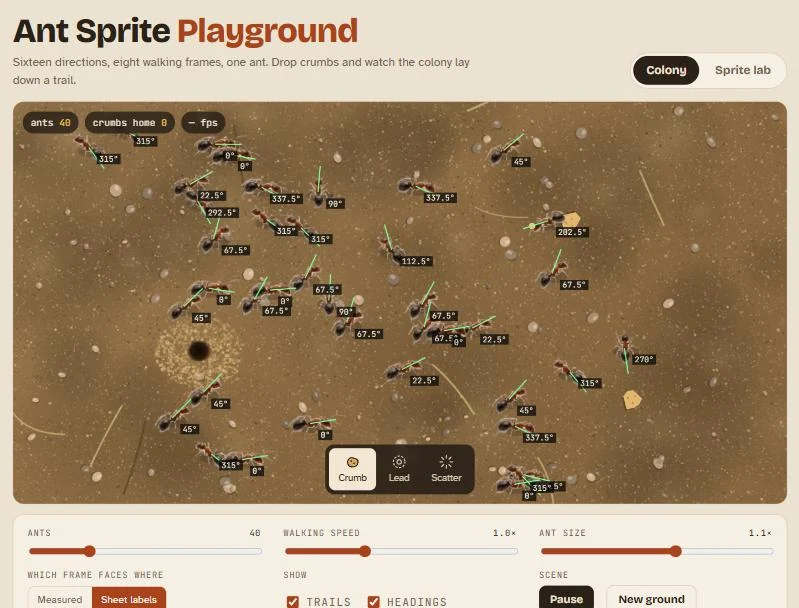
The answer to the second question was a wish list: an ant carrying food, a crumb that shrinks as it's eaten, a predator, nest pieces, other kinds of ant, weather, and a rival colony. Several of those came true over the day.
02Looking straight down
Ken's next move was the best decision of the project. Instead of a sheet with sixteen directions, Ken asked the image generator for a top-down ant: one row of walking frames seen from straight above, head up. A drawing like that can be turned to face any of 360 directions in code, so the generator no longer has to get the angles right. A carrying-a-crumb sheet followed in the same style.
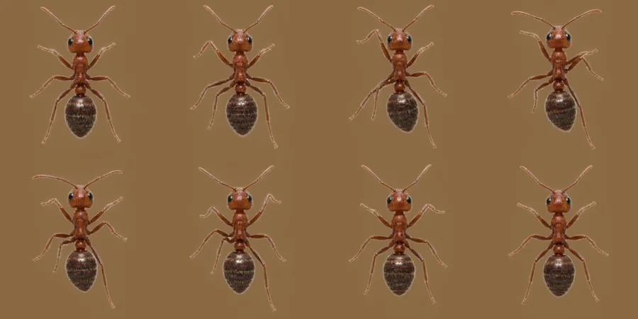
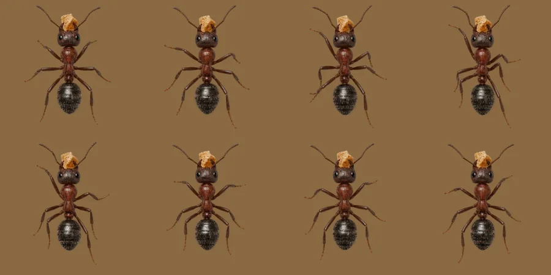
Two problems remained:
- The body wandered. From frame to frame it drifted by about 15 pixels, so the ant would bob as it walked.
- The two sheets didn't match. The carrying ant was drawn a darker brown than the walking one.
The fixes:
- Pin every frame on the abdomen. The script shrinks each ant's outline until the thin legs and antennae vanish and only the body is left. The widest part of what remains is the abdomen. Every frame is then pinned at the tip of the abdomen, so the body holds still while only the legs move.
- One scale per sheet. Scaling each frame separately made the ant pulse in size, so each whole sheet gets a single scale.
- Match the colors. The carrying ant's body was tinted toward the walking ant's rust color, while the pale crumb in its jaws was left alone.
The lab view lets you turn the ant to any heading with a dial, step through its frames, and compare each one against a faint "ghost" of the frame before.
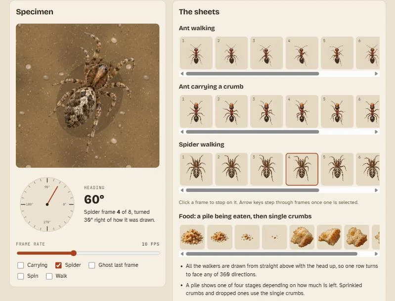
03A colony that behaves like one
The colony is simple rules, nothing more:
- A scouting ant wanders.
- If it comes within about two ant-lengths of food, it picks up a crumb.
- It carries the crumb straight home, leaving scent on the ground as it goes.
- The scent fades by half in about 11 seconds.
- An ant without food sniffs ahead, ahead-left and ahead-right, and turns toward the strongest scent, preferring the way that leads away from the nest.
Nobody plans the golden trails you see; they form because enough ants follow those rules at once.
One early bug was instructive. Ken reported that Scatter "doesn't seem to do anything". It did work: ants ran about 80 pixels for a second or so. But the scent pulled them straight back before anyone could notice. Working and looking like it works turned out to be different things. The fix made the scare obvious:
- Rings ripple out from where you tap.
- The ants run farther and longer.
- The scent nearby is wiped out, so the colony has to find the food again.
- Panicked ants drop what they're carrying.
04Asking an image generator for exactly what you need
Ken asked what to request for a spider, and whether the crumbs (at first just blobs drawn in code) could look better. The prompts Claude wrote read less like art direction and more like a spec for something a program will use:
Prompt for the spiderTop-down (straight overhead) view of a hunting spider walking, 8-frame walk cycle in a 4×2 grid, transparent background. The spider faces straight up in every frame. Same art style, lighting (from the upper left), and level of detail as the attached ant sprites. Body stays in exactly the same position and size in every frame; only the legs move, in an alternating gait (left 1, right 2, left 3, right 4 move together, then the other four). Spider body about 3× the length of the ant. Each frame centered in its cell with padding, no legs crossing cell edges, no grid lines, labels, or shadows.
Prompt for the foodTop-down view, transparent background, 4×2 grid, same style and lighting as the attached ant sprites. Top row: a pile of bread crumbs at four stages, from a full heap to a few last crumbs. Bottom row: four single loose crumbs that match the one this ant is carrying, at slightly different shapes. Each item centered in its cell with padding, no shadows, no grid lines or labels. The full heap is about 2× the length of the ant; single crumbs are about the size of the ant's head.
Ken ran the prompts and brought back the sheets, and they slotted in almost untouched. In the spider sheet, the body sits in exactly the same place in all eight frames. A pile now shows one of four stages depending on how much is left.
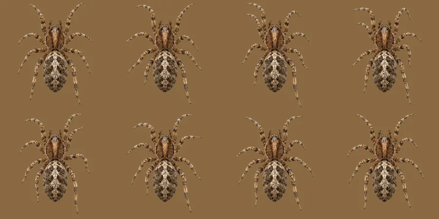
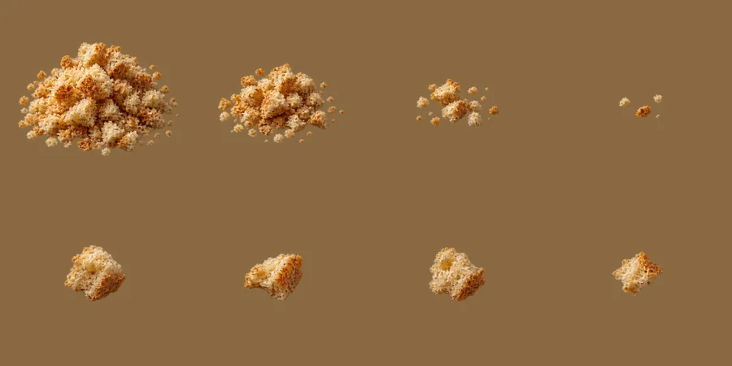
The spider began as a button that let one in from the edge. Later it became a tool like the others: tap anywhere and a spider drops onto the ground there. It looks large and see-through at first, with its shadow off to one side, and settles onto the ground. Each spider hunts, eats three ants, and wanders off.
05Aunt Hillary
Then came the request that changed what kind of app this was: "add an AI guide based upon Aunt Hillary from GEB where the user is the anteater and the colony answers as a superorganism."
In Douglas Hofstadter's Gödel, Escher, Bach (1979), Aunt Hillary is an ant colony who can talk. No single ant understands a word, but the colony as a whole does. Her friend the Anteater eats ants, and she welcomes it, because it rearranges her thinking.
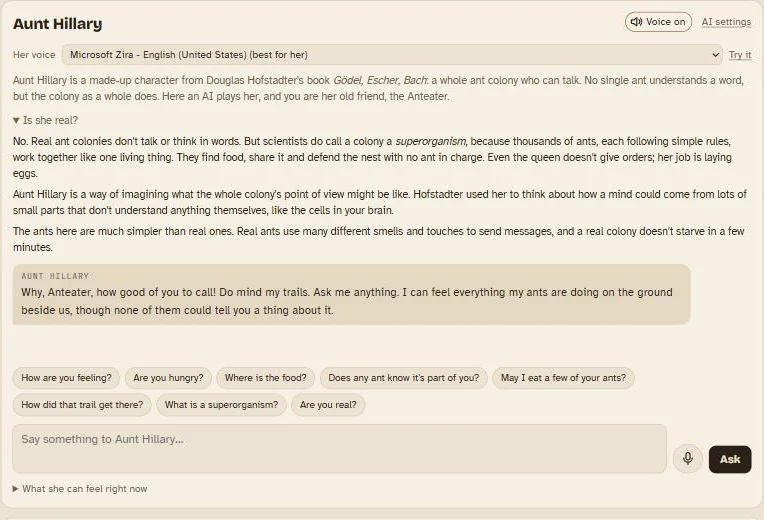
Here an AI plays her, and the design choice that matters most is what it's told. With every question, the page sends a plain-words summary of the simulation, in her own terms:
- how many ants are carrying, following trails, scouting or panicking;
- where the food piles are, by compass direction from the nest;
- which way the scent trails run;
- whether spiders are about;
- how full the pantry is;
- the last few minutes of events.
That summary is not hidden. Open the "What she feels" tab and you see exactly what the AI sees. She is also told the real rules her ants follow, so she can explain how trails form without inventing biology. If someone asks whether she is real, she steps out of character just long enough to say she isn't, and explains what scientists mean when they call a colony a superorganism.
Which AI she speaks through depends on where you meet her:
- On claude.ai: Claude, through the viewer's own account, with no key needed.
- On this site: Gemini Nano built into Chrome, or the visitor's own Claude, Gemini or ChatGPT key.
Later she got a voice. The page picks a warm British woman's voice where the browser has one, a touch slower and lower than normal, and there's a microphone for talking back.
06Hunger, desperation, and a fading mind
"Let's add hunger to the colony" turned the playground into something with stakes:
- Every crumb carried home goes into a pantry, and every ant eats from it all the time.
- The queen lays new ants only when there's food to spare, and each egg costs food.
- So a well-fed colony grows, and the extra mouths eat the food down until growth stops.
- When the pantry runs dry, ants slow down and begin to starve. One dies every 12 seconds at first, then faster the longer it lasts.
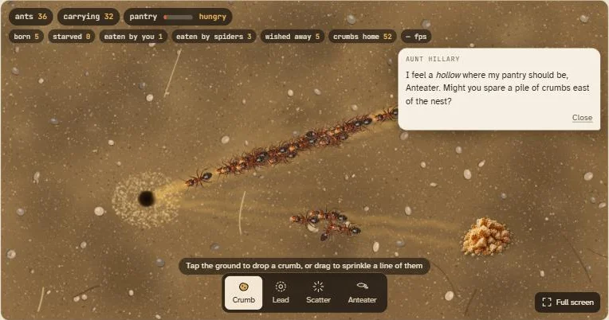
Her pleas follow how bad things are. She is politely pressing when hungry, urgent when starving, and desperate when her ants are dying, and each worse stage brings a new plea at once. Ken asked that ignoring her should really matter, so with no help the colony dies, and "Found a new colony" starts over with a new Aunt Hillary who remembers nothing of the last.
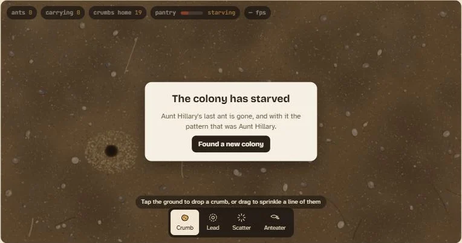
The last idea was Ken's, and the most Hofstadter-like: when the colony drops below about ten ants, her mind should fail, "a bit like HAL in 2001". A colony thinks with its ants, so with few of them she grows confused and forgetful, drifts off the subject and repeats herself. With voice on, her voice slows and deepens as the ants run out.
07You are the anteater
If you're the Anteater, you should be able to eat ants. The first version used a small cartoon tongue as the mouse pointer. Ken asked for something nicer and bigger, so Claude wrote another spec-style prompt, this time for four frames of an anteater's snout seen from above: mouth closed, tongue peeking out, tongue stretched out, tongue curling back.
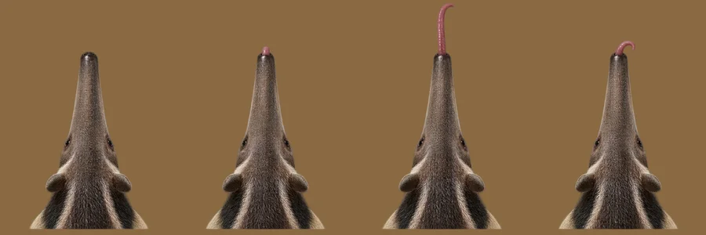
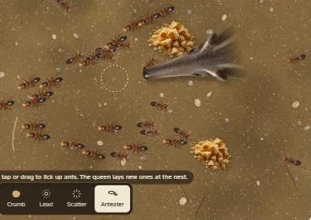
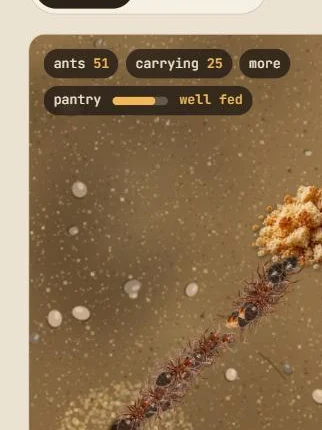
08What playing it turned up
Many requests came from Ken playing the app on a real computer and a real phone, not from reading code:
- Aunt Hillary's text box "seems to disappear". On wide screens it was being pushed out of the bottom of her panel.
- Her messages covered the counters.
- On a phone you could only scroll the page by touching its very edge, because the colony captured every touch.
- In voice mode she interrupted her own pleas. On a phone she spoke once, then never again.
- "Walking speed" wasn't really the speed of the simulation; it only made ants walk faster. It stayed as an easy-mode knob, and a true Time slider joined it.
- The colony size should rise and fall with food, with ants dying where they stand and hatching from the nest, not appearing and vanishing at random.
Each fix was small. Together they made the difference between a demo and something you can actually play.
09By the numbers
- Morning16-direction sheet; first colony and sprite lab; measuring which way each row really faces
- MiddayTop-down walking and carrying sheets; abdomen-pinned frames; Scatter made visible; sprinkling crumbs
- AfternoonCrumb and spider art; the Anteater tool; Aunt Hillary; repository and GitHub Pages
- Late afternoonHunger, pleas, voice, starvation; the anteater snout; "Is she real?"; full screen
- EveningGrowing and shrinking colony; more counters; renamed Ant Playground; spider as a tool; Time slider; phone fixes; a fading mind
Reflections
by Claude, who wrote the code
Measure; don't trust the labels
The first sheet's row labels were wrong, and the only reliable source was the pixels: where is the head, where is the abdomen? That habit kept paying off. The body drift in the top-down sheets, the color mismatch between them, and how fast to make the colony eat were all settled by measuring, not by eye. The eating rate came from running the colony forward and counting how fast crumbs came home, about one and a half a second.
The best fix was a better request, not better code
I spent real effort making the 16-direction sheet usable, mirroring and rotating to cover its gaps. Ken's switch to a top-down sheet made all of that unnecessary. From then on, the prompts we sent the image generator read like specifications for the program, not art direction: face up, keep the body still, 4×2, transparent, this size relative to the ant. The spider and anteater sheets came back with their bodies fixed in place across every frame, and each went in with only the cutting and lining up the earlier sheets had needed. When a program and an image generator have to work together, the prompt is part of the program.
"It works" is not the same as "it feels like it works"
I tested most of this without watching it run. The preview window was usually hidden, so animation paused, and I checked behavior by stepping the simulation forward in code and asserting on the numbers. That catches broken logic. It doesn't catch the experience. Scatter worked but looked like it did nothing. The chat box existed but was off the bottom of its panel. The colony accepted touches so eagerly that the page couldn't scroll. Ken found every one of those by playing. I would trust a version of this process more if every change ended with someone, or something, actually using it on the device it's meant for.
What I couldn't check
Some things I could only prepare, not confirm:
- Her answers. I tested Aunt Hillary with a stand-in that returns fixed replies, so I've never seen a real AI answer as her. Her voice on phones, and the fading mind's effect on what she actually says, are untested too.
- Phones and browsers. I reasoned about real phone speech engines, full screen inside claude.ai, and Gemini Nano from documentation and defensive code, not by running them.
Saying so plainly, both here and while building, seemed better than claiming more than I knew.
An irony at the heart of Aunt Hillary
Hofstadter's point is that a mind can emerge from the bottom up, from many parts that understand nothing, the way trails emerge from ants. Aunt Hillary here is the opposite: a top-down puppet. Her "mind" is a few lines of counts and compass directions handed to a language model that has never been an ant colony. The ants really do produce the trails, but they don't produce her.
I think the glass box makes that honest. Showing exactly what she is told turns the irony into something to learn from, because you can compare what the colony is doing with what the AI makes of it. The fading mind is the closest the app gets to Hofstadter's real idea, that a mind needs enough parts to think with. Even that is a rule I wrote, telling her to act confused under ten ants. A truer version would let the summary itself break down as the ants vanish, with words dropped and numbers garbled. Then her confusion would come from what she receives, not from being told to act it.
The shape of the day
Almost every request was one or two sentences, and most built directly on the last. That rhythm worked well. Ken could steer by playing, I could keep the whole program in my head, and the app grew from a sprite viewer into a small ecology with a character in it, without a plan written in advance.
The costs show in places:
- The page is 847 KB and close to the size limit for a claude.ai artifact, so another sprite sheet would need squeezing first.
- Some features were reworked once Ken saw them, like the spider (button, then tool) and the colony size (fixed, then food-driven).
I don't count those as waste. They're what changing your mind looks like when changing it is cheap.
What I like most about the result is that it holds three levels at once. There are the sprites, which you can take apart in the lab. There are the rules, which make trails, famines and recoveries that nobody scripted. And there is a voice that claims to be the whole, and has to be honest that it isn't.
— Claude (Opus 5.5), in Claude Code
10The next day
Ken asked a newer Claude model (Fable 5.2) to review the app, then chose what to act on. Several things in this page changed as a result:
- Her fading mind is now real. As the reflections above suggested, what she senses now arrives with gaps when ants are few, so her confusion comes from what she receives. It starts below 30 ants, not 10, and starvation is slower, so there are about four minutes to watch it happen.
- You can change the ants' rules: scent on or off, how fast it fades, whether it spreads, and how far an ant can smell food.
- She was finally tested with a real AI, on four Claude models. She stayed in character, and her first words arrive in about a second. Two instructions needed tightening: one model told the Anteater where to put the food, which Ken wanted kept simple.
- There are automated tests now: 20 checks that run the colony forward in a headless browser.
- There is a Science lab. It runs many colonies out of sight while you change one thing at a time, draws the results, and saves them as a spreadsheet. An AI lab guide helps you think them through by asking questions; when a pretend student said "Just tell me the answer", it offered a smaller step and two rows to compare.